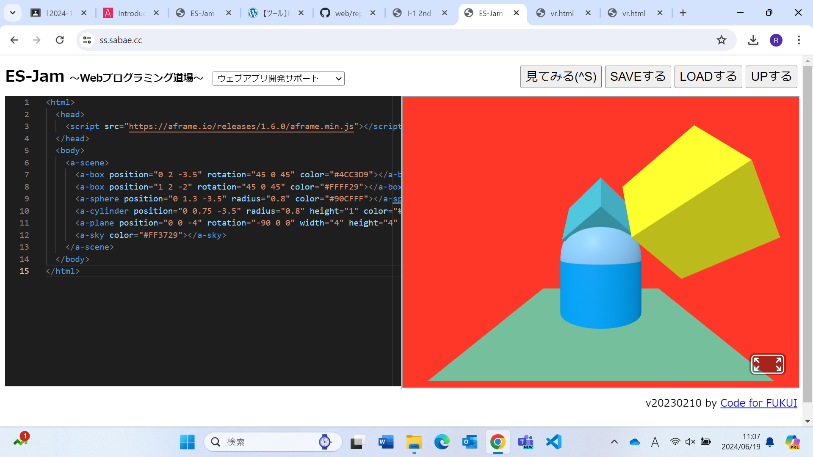

3-1 JavaScript体験：VR空間を作る

自作した３次元空間
1.内容
GITHUBを使うとCommit changeに時間がかかるためWebプログラミング道場というサイトを使って3次元モデルを作った。A-Frameのテンプレートを書き換えて物体の位置、向き、色、幅、高さ、半径を指定するようになっている。また16進数を用いてRGBの数値を決め、カラー表示が行われる。円柱と球が重なって円柱の上に半球があるようにするために、x座標とz座標を合わせて球のy座標を円柱よりも大きくした。立方体はx,z方向に45°回転させた。
2.感想
設定を変えられるのは立方体と円柱と球の部分だけで、床の部分は変えられないと思っていたが、床もplaneというオブジェクトであり設定を変えられたため、プログラミングをして何かを作る際は1から設定や条件を決めなければならないと思った。またオブジェクトをz軸方向に回転させることが直感的に理解しにくかった。